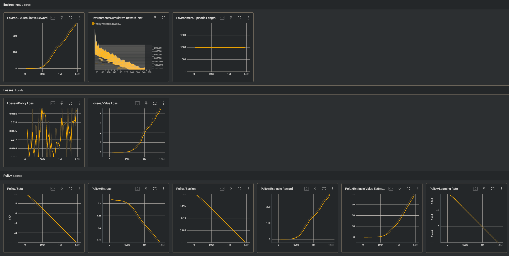

I am currently enrolled as undergraduate student at LMU Munich studying computer science.
I am mostly interested in (no particular order) :
Machine Learning
Linux
Cryptography
In my freetime I also enjoy biking, cooking, wakeboarding and chess.
In case you would like to get in touch feel free to contact me here.
You can see my latest project here:
Training intelligent Agents with Unity ML-Agents Toolkit
The Unity Machine Learning Agents Toolkit lets you train intelligent Agents inside Unity enviroments. The
Agents learn automatically through reinforcement learning, imitation learning, neuroevolution, or other methods.
You can check the Readme file for more information.
Installation
Installation was mostly straightforward. I basically just followed the Installation guide.
I would highly recommend to also install the optional com.unity.ml-agents.extensions package and also to make sure that
you have the com.unity.inputsystem package installed.
Training the first Agent
Once everything was up and running I could go ahead with training the first agent. To start I chose the
basic 3D Ball Model where the agent is getting trained to balance a ball on his head. You can simply start the
training by running mlagents-learn config/ppo/3DBall.yaml --run-id=first3DBallRun and pressing the start button in unity.
You can also train any other of the provided
models by replacing the 3DBall.yaml file in the comand. You can see the .yaml files at \ml-agents-release_19\config\ppo.
I let the model train for around 7 minutes. You can actually see your model training which is pretty cool.
The trained model will be saved as an .onnx file which you can then embed into
your agent. So this is how the agent performs after 7 Minutes of training:
Willy the Worm
One of my favorite enviremonts was the Worm. You can train him to crawl to the the green box. I trained him for around 14 Minutes and he made some
great progress. Here is the full training video:
Another cool feature is that you check summary statistics of the Training in TensorBoard with the command: tensorboard --logdir results.
Here you can see the statistics of Willy training for 14 Minutes.

And here is how Willy is performing after 14 Minutes of Training. Pretty good I would say. There are also other interesting enviroments to try out.